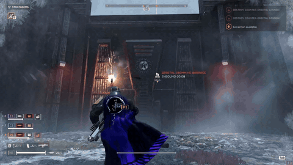
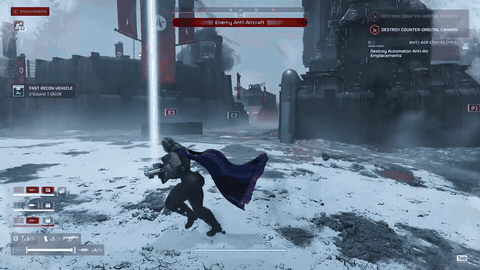
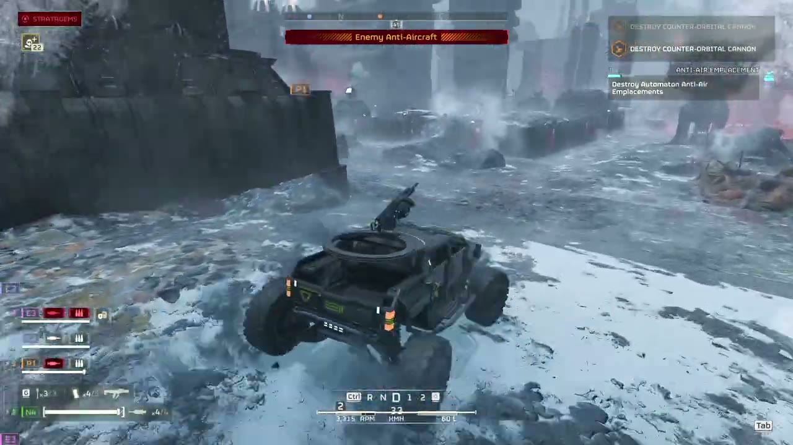

Helldivers 2 review: throwing rats and missing the shuttle

Throwing rats
Helldivers 2 is an online co-op third-person shooter from Arrowhead Game Studios. It's built for squads of up to four, and friendly fire is a certainty.
Getting in took about an hour. My mod list kept throwing the same fatal error, so I cut it from 20 down to nine, and it still failed. The Star Wars mods would not load, and a friend blamed a game update from a few days earlier. The rat mod was the one that worked from the start, swapping my throwables for rats. Rats took out an Automaton outpost, and three of them broke down a wall. Later more of my mods started working, including a custom armor model for the FS-05 Marksman armor and a purple cape.

The recon vehicle drops in. We called it the Warthog.

One friend would only ride if he drove
Most of the laughs came from the game's own M-102 Fast Recon Vehicle, which we called the Warthog. I flipped the first one. A friend who only rides if he drives threw a rat at it, and it blew up and killed me. Another one landed on a rooftop I couldn't reach, and a later one got wedged and crushed us.
At one extraction I called an orbital gas strike on our own shuttle. Later a friend mistook me for an enemy and killed me, and I reinforced too far out to make the ship. Later still I tried a Splinter Cell stealth crawl to the shuttle. I got spotted and left behind again.
Honestly, the base game's driving and friendly fire were funnier than any mod I got working.